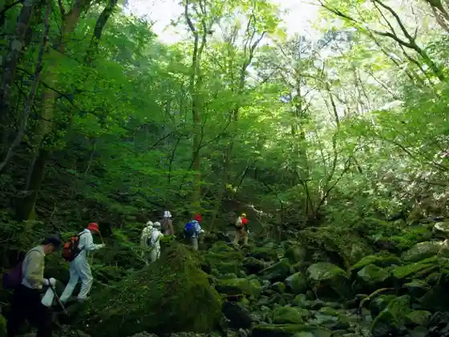
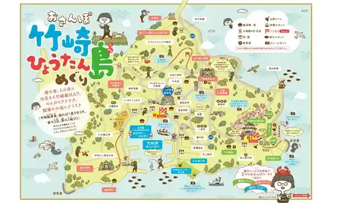
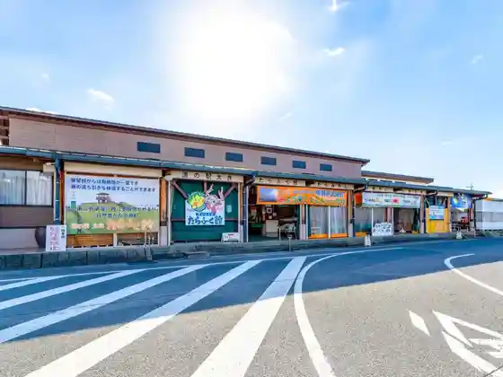

Tara Gaku
Tara, Saga · 0954-67-0065 · Official / source link

Experience : Takezaki Wo Meguru ! Osanpo Takezaki Hyotan Shima Meguri !
Tara, Saga · 0954-67-0065 · Official / source link

Experience : Tajima Kankitsu Sono & Kako Tokoro no Experience
Tara, Saga · 0954-67-0513 · Official / source link
Roadside Station Tara (Tarafuku Kan)
Tara, Saga · 0954-67-9117 · Official / source link

Takezaki Joshi Lookout
Tara, Saga · 0954-67-0065 · Official / source link
Shirahama Beach
Tara, Saga · 0954-67-0312 · Official / source link
Tara B&G Kaiyo Center
Tara, Saga · 0954-68-2071 · Official / source link
Oo Shrine no Kaichu Torii Kaichu Doro
Tara, Saga · 0954-67-0065 · Official / source link
Roadside Station Tara Tourist Information Rentarusaikuru
Tara, Saga · 0954-67-0065 · Official / source link
Nakayama Campground
Tara, Saga · 0954-67-0220 · Official / source link
Experience : Tajima Chikusan Uinna Tsukuri
Tara, Saga · 0954-67-0338 · Official / source link
Tara Takezaki Onsen
Tara, Saga · 0954-67-0065 · Official / source link
Roadside Station Tara Tourist Information (Tara Tourism Association)
Tara, Saga · 0954-67-0065 · Official / source link
Yamamoto Farm
Tara, Saga · 0954-68-3460 · Official / source link